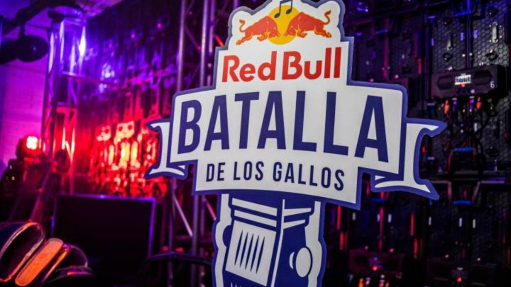

Competencias
El freestyle es un mundo lleno de emoción y talento, con diversas competencias que destacan por su estilo y formato único. En esta sección, te presentamos algunas de las principales competencias de freestyle: Gold Level, Red Bull Nacional y FMS Nacional. Cada una tiene sus propias reglas y características, y todas juegan un papel importante en la escena del freestyle
Red Bull Batalla de los Gallos Nacional
Descripcion:
La Red Bull Batalla de los Gallos Nacional es una de las competencias de freestyle más prestigiosas en el ámbito hispanohablante. Esta competencia nacional es la antesala para la Red Bull Internacional, donde los ganadores de cada país se enfrentan por el título mundial.
Formato:
Eliminatorias regionales previas a la nacional.Competición 1 vs 1 con eliminación directa.Jurado de 3 a 5 miembros, más el voto del público.
Criterios de Evaluación:
- Originalidad
- Fluidez
- Conexion con el´publico
- Tecnica
FMS Nacional

Descripcion
La Freestyle Master Series (FMS) Nacional es una de las ligas más importantes en el circuito de freestyle, organizada en diversos países hispanohablantes. Esta competencia se caracteriza por su formato de liga, donde los freestylers compiten en eventos regulares durante toda la temporada para acumular puntos y determinar al campeón nacional.
Formato:
Liga de freestyle 1 vs 1. Los freestylers se enfrentan en batallas directas en eventos mensuales. Cada evento suma puntos para el ranking general,cada batalla consta de 3 rondas principales y una ronda de desempate si es necesario. Las rondas incluyen formatos como temáticas y respuestas rápidas.
Criterios de evaluacion:
- Flow
- Tecnica
- Creatividad
- Presencia escenica